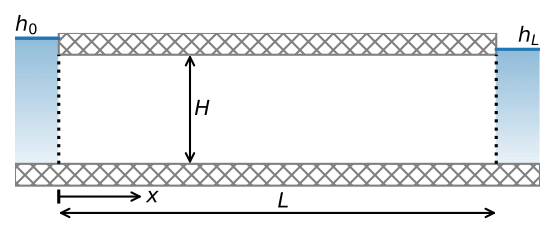
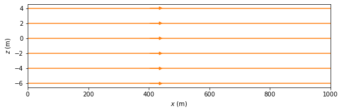
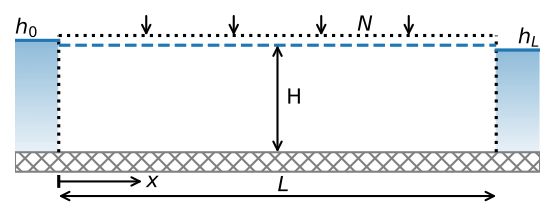
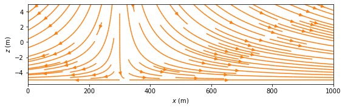
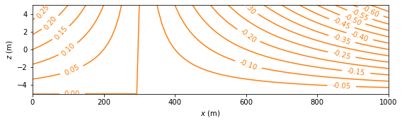
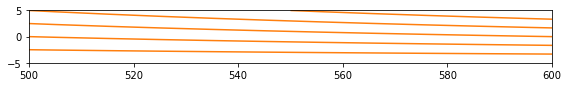
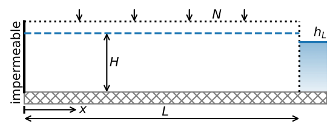
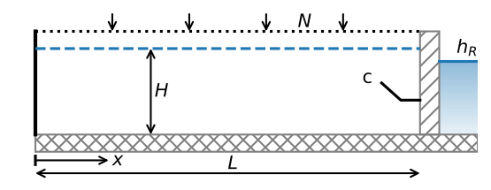
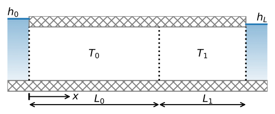
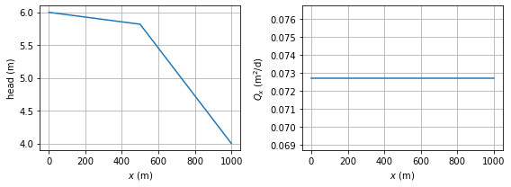

Steady one-dimensional flow with constant transmissivity
Contents

The Python code provided below is from
Analytical Groundwater Modeling: Theory and Applications Using Python
by Mark Bakker and Vincent Post
ISBN 9781138029392
The book is published by CRC press and is available here.
This Notebook is provided under the MIT license.
© 2022 Mark Bakker and Vincent Post
Steady one-dimensional flow with constant transmissivity#
%matplotlib inline
import numpy as np
import matplotlib.pyplot as plt
from ipywidgets import *
plt.rcParams["figure.figsize"] = (8, 3) # set default figure size
plt.rcParams["contour.negative_linestyle"] = 'solid' # set default line style
plt.rcParams["figure.autolayout"] = True # same as tight_layout after every plot
Flow between two rivers#

# parameters
L = 1000 # aquifer length, m
H = 10 # aquifer thickness, m
zb = -6 # aquifer bottom, m
n = 0.3 # porosity, -
k = 10 # hydraulic conductivity, m/d
T = k * H # transmissivity, m^2/d
h0 = 6 # specified head at the left boundary, m
hL = 4 # specified head at the right boundary, m
# basic plot
def plot_subplots(h0, hL, k):
"""
Plot the hydraulic head in one subplot and q in the other
Keyword Arguments
h0 -- hydraulic head to the left, m
hL -- hydraulic head to the right, m
k -- hydraulic conductivity, m/d
"""
T = k * H # transmissivity, m^2/d
x = np.linspace(0, L, 100)
h = (hL - h0) * x / L + h0
Qx = - T * (hL - h0) / L * np.ones_like(x)
plt.subplot(121)
plt.plot(x, h)
ax = plt.gca()
ax.set_ylim((4,8))
plt.grid()
plt.xlabel('$x$ (m)')
plt.ylabel('head (m)')
plt.subplot(122)
plt.plot(x, Qx)
plt.grid()
plt.xlabel('$x$ (m)')
plt.ylabel('$Q_x$ (m$^2$/d)');
plt.show()
interact(plot_subplots,
h0 = widgets.FloatSlider(value=6, min=4, max=8, step=0.1, description=r'$h_0, m$:', disabled=False),
hL=widgets.FloatSlider(value=4, min=4, max=8, step=0.1, description=r'$h_L, m$:', disabled=False),
k=widgets.FloatText(value=10, min=0.1, max=100, step=0.1, description=r'$K, \frac{m}{d}$:', disabled=False))
<function __main__.plot_subplots(h0, hL, k)>
print("Hello")
Hello
print("Hello")
Hello
# solution
xg, zg = np.meshgrid(np.linspace(0, L, 2), np.linspace(zb, zb + H, 2))
qx = -k * (hL - h0) / L * np.ones_like(xg)
qz = np.zeros_like(xg)
# basic stream plot
plt.subplot(111, aspect=25)
plt.streamplot(xg, zg, qx, qz, color='C1', density=0.2)
plt.xlabel('$x$ (m)')
plt.ylabel('$z$ (m)');

# travel time
vx = -k * (hL - h0) / (n * L)
print(f'mean velocity: {vx:.4f} m/d')
print(f'travel time from left river to right river: {L / vx:.0f} days')
mean velocity: 0.0667 m/d
travel time from left river to right river: 15000 days
Areal recharge between two rivers#

# parameters
L = 1000 # aquifer length, m
H = 10 # saturated thickness, m
zb = -5 # aquifer bottom, m
k = 10 # hydraulic conductivity, m/d
n = 0.3 # porosity, -
T = k * H # transmissivity, m^2/d
h0 = 6 # specified head at the left boundary, m
hL = 4 # specified head at the right boundary, m
N = 0.001 # areal recharge, m/d
# solution
x = np.linspace(0, L, 100)
h = -N / (2 * T) * (x ** 2 - L * x) + (hL - h0) * x / L + h0
Qx = N * (x - L / 2) - T * (hL - h0) / L
# basic plot
plt.subplot(121)
plt.plot(x, h)
plt.grid()
plt.xlabel('$x$ (m)')
plt.ylabel('head (m)')
plt.subplot(122)
plt.plot(x, Qx)
plt.grid()
plt.xlabel('$x$ (m)')
plt.ylabel('$Q_x$ (m$^2$/d)');

print(f'discharge into left river: {-Qx[0]:.3f} m^2/d')
print(f'discharge into right river: {Qx[-1]:.3f} m^2/d')
discharge into left river: 0.300 m^2/d
discharge into right river: 0.700 m^2/d
# solution
xg, zg = np.meshgrid(np.linspace(0, L, 10), np.linspace(zb, zb + H, 5))
qx = (N * (xg - L / 2) - T * (hL - h0) / L) / H
qz = - N * (zg - zb) / H
# basic stream plot
plt.subplot(111, aspect=25)
plt.streamplot(xg, zg, qx, qz, color='C1')
plt.xlabel('$x$ (m)')
plt.ylabel('$z$ (m)');

# solution
x = np.linspace(0, L, 100)
Qx = N * (x - L / 2) - T * (hL - h0) / L
psi = np.zeros((2, len(x)))
psi[1, :] = -Qx # at the top of the aquifer, the stream function is -Qx
xg = x
zg = [zb, zb + H]
# basic streamline plot
plt.subplot(111, aspect=25)
cs = plt.contour(xg, zg, psi, 20, colors='C1', linestyles='-')
plt.clabel(cs, fmt='%1.2f')
plt.xlabel('$x$ (m)')
plt.ylabel('$z$ (m)');
# basic streamline plot of part of flow field without vertical exaggeration
plt.subplot(111, aspect=1, xlim=(500, 600))
cs = plt.contour(xg, zg, psi, 20, colors='C1', linestyles='-');

Areal recharge between an impermeable boundary and a river#

# parameters
L = 1000 # aquifer length, m
H = 10 # aquifer thickness, m
zb = -5 # aquifer bottom, m
k = 10 # hydraulic conductivity, m/d
T = k * H # transmissivity, m^2/d
hL = 4 # specified head at the right boundary, m
N = 0.001 # areal recharge, m/d
# solution
x = np.linspace(0, L, 100)
h = -N / (2 * T) * (x ** 2 - L ** 2) + hL
Qx = N * x
# basic plot
plt.subplot(121)
plt.plot(x, h)
plt.grid()
plt.xlabel('$x$ (m)')
plt.ylabel('head (m)')
plt.subplot(122)
plt.plot(x, Qx)
plt.grid()
plt.xlabel('$x$ (m)')
plt.ylabel('$Q_x$ (m$^2$/d)');


# additional parameters
hR = 4 # water level in river, m
c = 10 # hydraulic resistance of river bed, d
# solution
x = np.linspace(0, L, 100)
C = H / c
hL = N * L / C + hR
h = -N / (2 * T) * (x ** 2 - L ** 2) + hL
Qx = N * x
# basic plot
plt.subplot(121)
plt.plot(x, h)
plt.grid()
plt.xlabel('$x$ (m)')
plt.ylabel('head (m)')
plt.subplot(122)
plt.plot(x, Qx)
plt.grid()
plt.xlabel('$x$ (m)')
plt.ylabel('$Q_x$ (m$^2$/d)');

Flow through two zones of different transmissivities#

# parameters
h0 = 6 # specified head at the left boundary, m
hL = 4 # specified head at the right boundary, m
L0 = 500 # length of zone 0, m
L1 = 500 # length of zone 1, m
T0 = 200 # transmissivity of zone 0, m^2/d
T1 = 20 # transmissivity of zone 1, m^2/d
L = L0 + L1 # total length, m
# solution
x = np.linspace(0, L, 101)
h = np.empty_like(x)
h[x < L0] = T1 * L / (T0 * L1 + T1 * L0) * (hL - h0) * x[x < L0] / L + h0
h[x >= L0] = T0 * L / (T0 * L1 + T1 * L0) * (hL - h0) * (x[x >= L0] - L) / L + hL
Qx = -T0 * T1 * L / (T0 * L1 + T1 * L0) * (hL - h0) / L
hhalfway = h[50]
print(f'head halfway: {hhalfway:.2f} m')
print(f'head gradient zone 0: {(hhalfway - h0) / L0: .6f}')
print(f'head gradient zone 1: {(hL - hhalfway) / L1: .6f}')
head halfway: 5.82 m
head gradient zone 0: -0.000364
head gradient zone 1: -0.003636
# basic plot
plt.subplot(121)
plt.plot(x, h)
plt.grid()
plt.xlabel('$x$ (m)')
plt.ylabel('head (m)')
plt.subplot(122)
plt.plot([0, L], [Qx, Qx])
plt.grid()
plt.xlabel('$x$ (m)')
plt.ylabel('$Q_x$ (m$^2$/d)');

print(f'arithmetic mean transmissivity: {(T0 + T1) / 2: .1f} m^2/d')
print(f'effective transmissivity: {L / (L1 / T1 + L0 / T0): .1f} m^2/d')
arithmetic mean transmissivity: 110.0 m^2/d
effective transmissivity: 36.4 m^2/d